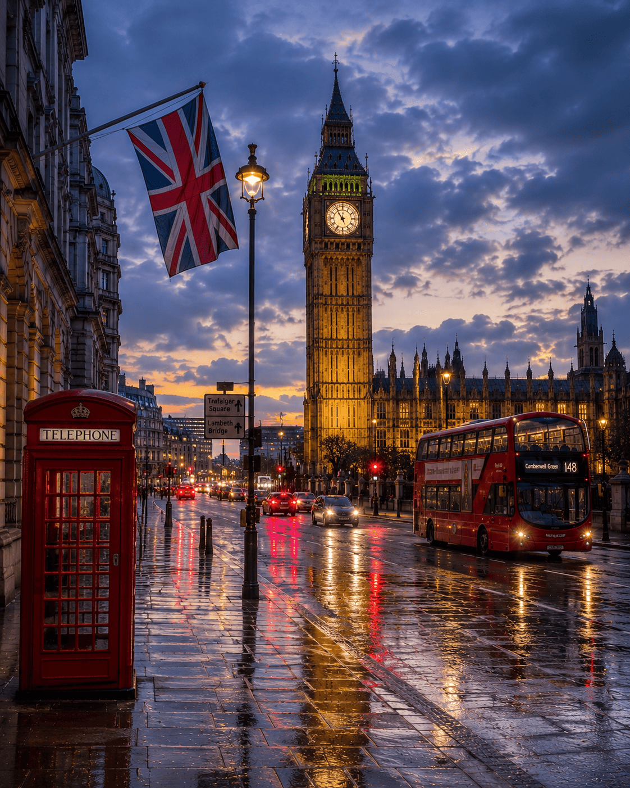
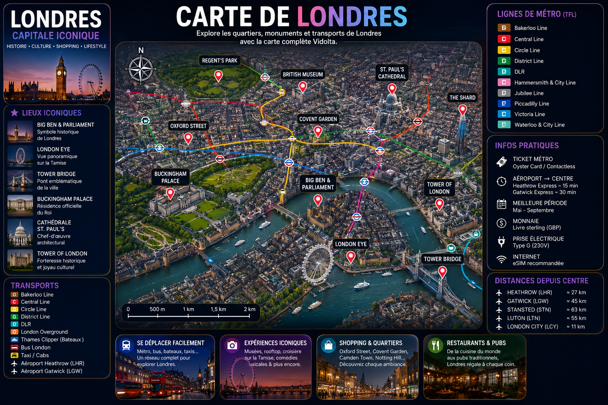
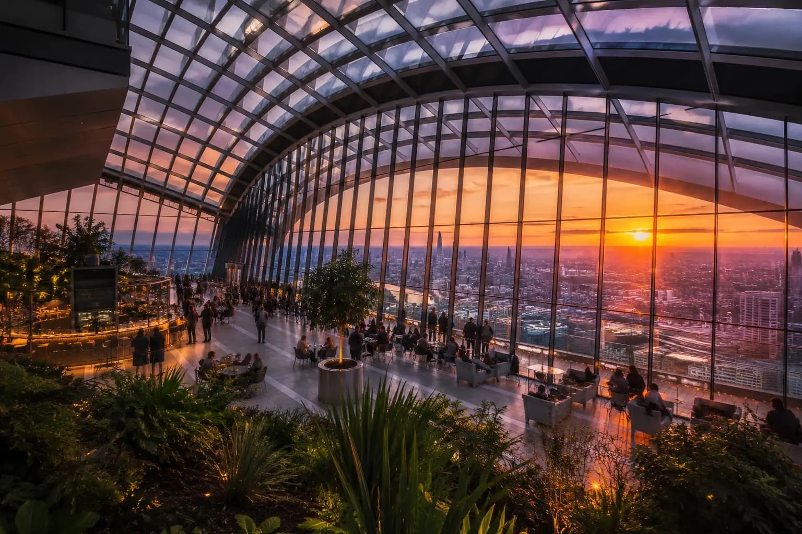
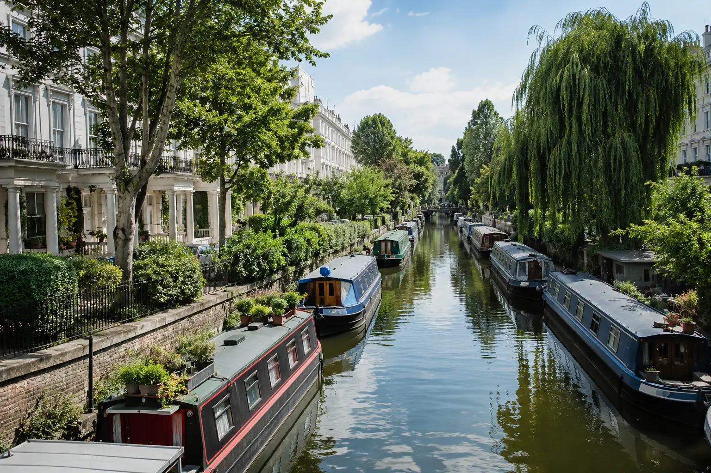
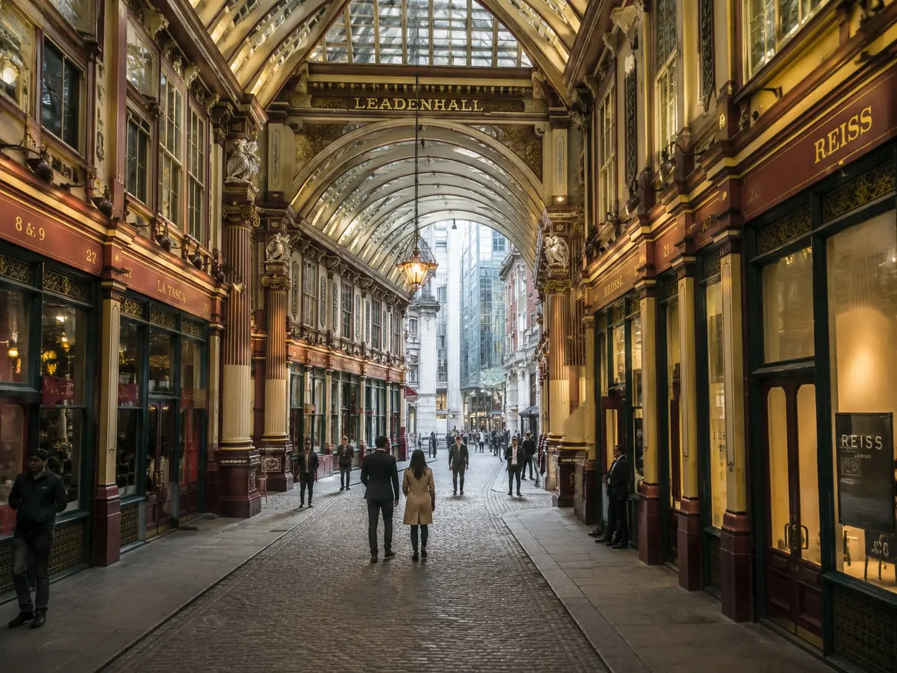
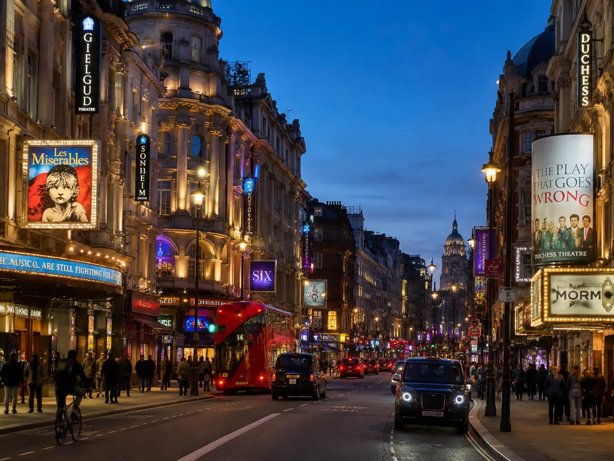
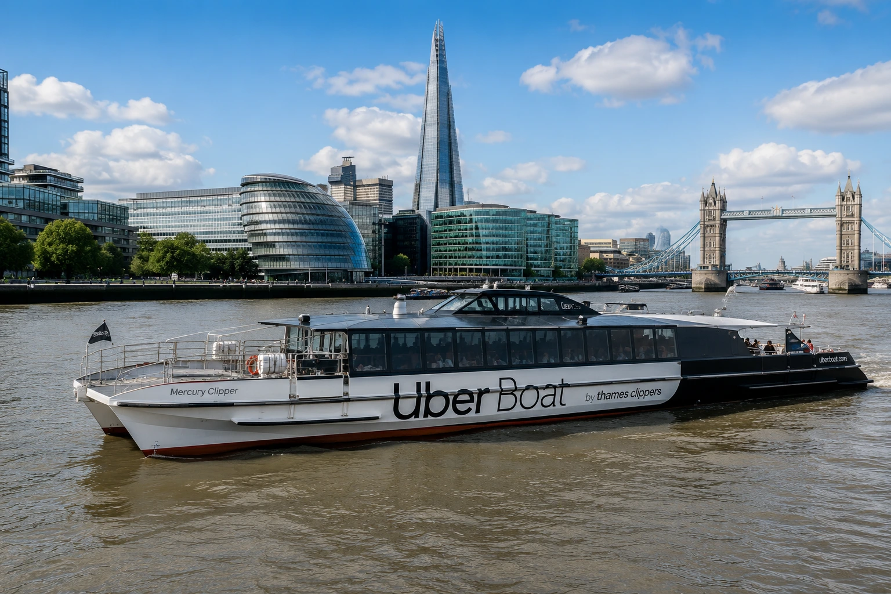
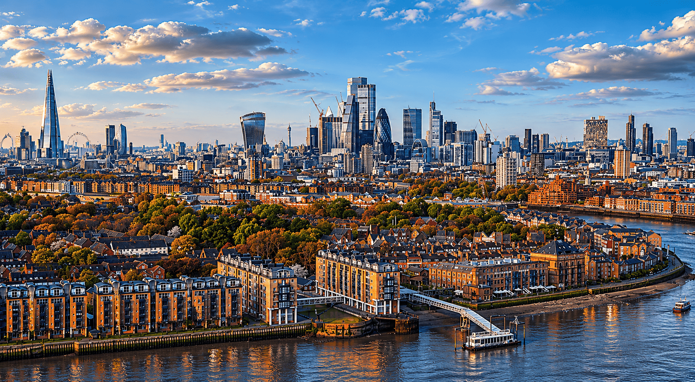

Le métro de Londres permet d’explorer rapidement chaque quartier iconique.
Découvre Soho, Camden, Borough Market et les meilleures adresses londoniennes.
The Shard, Canary Wharf et les rooftops offrent une autre vision de la ville.
London Eye, Tower Bridge, Big Ben et croisières sur la Tamise.
Londres est une capitale cosmopolite où l'histoire côtoie les gratte-ciel modernes, les marchés emblématiques et certains des musées les plus célèbres du monde.
De Westminster à Shoreditch, chaque quartier possède sa propre identité et offre une expérience différente de la ville.
Entre culture, gastronomie, spectacles, shopping et architecture, Londres est l'une des destinations urbaines les plus complètes au monde.


Observer la skyline londonienne depuis les jardins suspendus du Sky Garden est l'une des expériences les plus impressionnantes de la ville.
Le parc de Greenwich offre l'une des plus belles vues sur Canary Wharf et le centre de Londres.

Un quartier paisible bordé de canaux, loin de l'agitation touristique habituelle.

Un marché couvert historique à l'architecture remarquable au cœur de la City.

Le West End est l'un des hauts lieux mondiaux du spectacle vivant.

Découvrir Londres depuis l'eau offre une perspective totalement différente sur la ville.
Utilise le métro londonien, les bus rouges et l’Elizabeth Line facilement.
ExplorerReste connecté partout dans Londres avec une eSIM rapide et simple.
ExplorerDécouvre les célèbres taxis londoniens et explore la ville autrement.
ExplorerLe meilleur choix pour une première visite. Central, animé et proche des principales attractions de Londres.
Restaurants, bars et vie nocturne. Idéal pour profiter pleinement de l'énergie londonienne.
Un quartier moderne le long de la Tamise avec une vue exceptionnelle sur le centre de Londres.
Élégant, calme et proche de plusieurs musées emblématiques. Une valeur sûre pour un séjour confortable.
Le Londres créatif. Street art, cafés indépendants et ambiance contemporaine.
L'anglais est la langue officielle. Les zones touristiques sont très accessibles aux voyageurs internationaux.
La livre sterling (£) est utilisée au Royaume-Uni. Les paiements par carte sont acceptés quasiment partout.
Les prises britanniques sont de type G. Un adaptateur est nécessaire pour la plupart des voyageurs européens.
Trois à cinq jours permettent de découvrir les principaux quartiers et attractions de Londres.
Le printemps et le début de l'automne offrent généralement les conditions les plus agréables pour visiter la ville.
Londres est une destination relativement chère. Un budget confortable se situe souvent entre 200 € et 350 € par jour.
Explore les meilleures adresses modernes et restaurants iconiques de Londres.
ExplorerArsenal, Chelsea, Tottenham ou West Ham : Londres possède certains des stades les plus mythiques du football européen. Vivre un match de Premier League à Londres est une expérience incontournable.
Voir les billetsChaque été, Wimbledon attire les passionnés de tennis du monde entier. Découvre l’ambiance unique du tournoi le plus prestigieux du Grand Chelem.
Explorer WimbledonLe Tottenham Hotspur Stadium accueille des rencontres de football, des matchs NFL et des événements sportifs majeurs toute l’année.
DécouvrirFootball, tennis, rugby ou concerts : trouve facilement des places pour les plus grands événements de Londres.
Explorer les événementsUn hôtel moins cher peut sembler intéressant, mais les temps de trajet augmentent rapidement dans une ville aussi vaste que Londres.
De nombreux visiteurs restent dans le centre alors que Greenwich offre certains des plus beaux panoramas de la capitale.
Les créneaux gratuits les plus recherchés partent souvent plusieurs semaines à l'avance.
Même avec un excellent réseau de métro, Londres est immense et les déplacements peuvent prendre plus de temps que prévu.
Tous les pass touristiques ne sont pas rentables. Vérifie toujours les attractions que tu comptes réellement visiter.
Trois à cinq jours permettent de découvrir les principaux quartiers, monuments et expériences emblématiques de Londres. Une semaine offre davantage de temps pour explorer Greenwich, Camden ou les musées.
Covent Garden est souvent le meilleur choix pour une première découverte. Le quartier est central, animé et permet d'accéder facilement aux principales attractions.
Londres fait partie des villes les plus coûteuses d'Europe, mais il existe de nombreuses activités gratuites comme les musées nationaux, les parcs royaux ou certaines vues panoramiques.
Le printemps et le début de l'automne offrent généralement les températures les plus agréables et une fréquentation plus modérée qu'en plein été.
Oui. Le Sky Garden, certaines comédies musicales du West End, Wimbledon ou les plateformes panoramiques les plus populaires sont souvent complets plusieurs jours ou semaines à l'avance.
